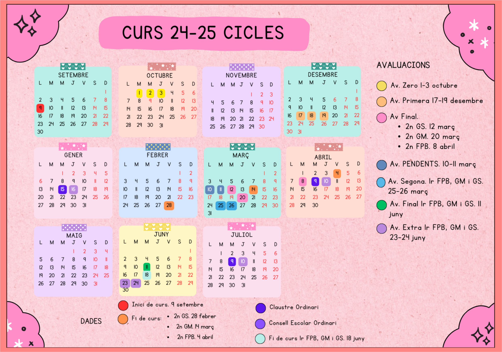

1.1. Calendario del curso

1.2. Objetivos del módulo
Gestiona entornos de virtualización.
Administra servicios de resolución de nombres, analizándolos y garantizando la seguridad del servicio.
Administra servicios de configuración automática, identificándolos y verificando la correcta asignación de los parámetros.
Administra servidores Web aplicando criterios de configuración y asegurando el funcionamiento del servicio.
Administra servicios de transferencia de archivos asegurando y limitando el acceso a la información.
Administra servidores de correo electrónico, aplicando criterios de configuración y garantizando la seguridad del servicio.
Configura y administra escenarios en entornos de cloud computing.
Administra servicios de mensajería instantánea, noticias y listas de distribución, verificando y asegurando el acceso de los usuarios.
Administra servicios de audio identificando las necesidades de distribución y adaptando los formatos.
Administra servicios de vídeo identificando las necesidades de distribución y adaptando los formatos.
1.3. Contenidos
| 1ª Evaluación | 2ª Evaluación |
|---|---|
| Introducción a los Srvs. de red | Interconexión de redes. Seguridad. |
| Asignación dinámmica. DHCP | Servcios de acceso remoto. |
| Sist. Nombres de dominio. DNS | Servicio de Correo Electrónico |
| Servidores web | Otros servicios |
1.4. Funcionamiento
Asistencia PRESENCIAL.
Si algo no funciona. Se cambia. Se habla…
Ventaja: vamos a usar herramientas que ya conocemos y que no nos deben ser complicadas de usar. Además debemos ser capaces de usar cada una correctamente.
WebFamilia -> Debéis tener acceso. Si no es así solicitarlo.
Aules. → Materiales, tareas, cuestionarios, foros, chats, …
Correo @alu.edu.gva.es que incluye herramientas como:
Onedrive → Almacenamiento en la nube.
Teams → Videoconferencia.
Calendario -> Tendremos calendario de grupo para exámenes, controles, etc…y además podéis tener vuestro propio calendario.
Telegram (grupo para noticias/anuncios) → Enlace al canal
Las explicaciones teóricas se harán en clase con lo más reducidas posible y a trabajar (en clase y en casa).
A través de los medios anteriores o en clase se podrán resolver las dudas que vayan apareciendo.
Los puestos están señalados. NO desplazar equipo o mobiliario.
Siempre nos sentaremos en el mismo sitio
Para evitar las pérdidas de información y facilitar tu trabajo tienes dos opciones (MUY RECOMENDABLE):
Usa tu propio disco duro externo/portátil SSD (seguro que será más rápido que el DD del PC del aula).
Traer tu propio portátil (En este caso habría que ubicarte en algún puesto concreto. ATENCIÓN AL USO DE LOS CABLES DE RED).
Atención con la UBICACIÓN de tus MV si están en el DD del PC.
Estrenamos PDIs. NO TOCAR
1.5. Evaluación
Prácticas / Ejercicios=40%
Exámenes por tema/s=30%
Examen Final Evaluación=30%
Aprobar una evaluación significa superar esa parte del módulo. En caso contrario se debe recuperar en la siguiente evaluación.